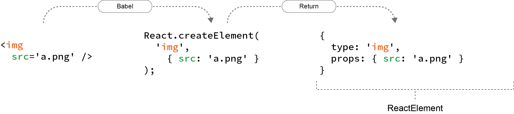
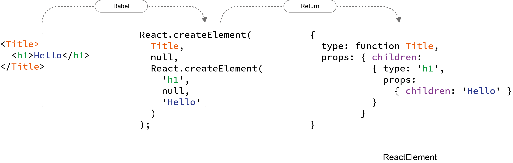

React Workshop - Vorbereitung
Falls noch nicht gemacht:
git clone -b gh-pages https://github.com/DJCordhose/react-workshop.git- Im geklonten Verzeichnis:
npm install - Im geklonten Verzeichnis:
npm run setup - In
code/workspacewechseln - Ausführen:
npm run devserver - Browser öffnen: http://localhost:8080
Folien: Im geklonten Verzeichnis 2016_enterjs.html
React Workshop
Inhalt
Plan
- 11:00 - 11:30: Teil 0: React-Einführung und Build-Prozess
- 11:30 - 12:30: Teil 1: React-Komponenten, ES6 Grundlagen
- 12:30 - 13:30: Mittagessen
- 13:30 - 14:00: Übung für Teil 1
- 14:00 - 14:30: Teil 2: Komponentenhierarchien
- 14:30 - 15:00: Übung für Teil 2
- 15:00 - 15:15: Kaffeepause
- 15:15 - 15:45: Teil 3: Testen (optional mit kleiner Übung)
- 15:45 - 16:15: Teil 4: React Router
- 16:15 - 16:45: Übung für Teil 4
- 16:45 - 17:00: kleine Kaffeepause
- 17:00 - 17:30: Teil 5: Remote-Calls gegen Server
- 17:30 - max. 18:00: Ausblick/Fragen/Abschluss
Teil 0
React-Einführung und Build-Prozess
React
- Framework für Facebook und viele andere
- Komponenten kapseln Template und Logik
- Deklarativ
- Abstraktion vom DOM: f(model) -> UI
- Minimales API
- Ein-Weg-Data-Binding: Zustandsänderungen stellen Komponente komplett neu dar
- Kann im Browser und auf dem Server rendern
React Komponenten
- Werden als ES6 Klasse oder Funktion implementiert
- Keine Templatesprache (stattdessen JavaScript)
- Templates können HTML-artige Syntax enthalten (JSX)
class HelloMessage extends React.Component {
render() {
return <h1 className='title'>Hello, World!</h1>
}
}
Hello World React
DemoHello World React
class HelloMessage extends React.Component {
render() {
return (<div>
<input ref={input => this.input = input}
onChange={event => this.updateModel(event)}
value={this.state.greeting} />
<p>{this.state.greeting}, World</p>
<button
onClick={() => this.reset()}>
Clear
</button>
</div>);
} constructor(props) {
super(props);
this.state = {greeting: this.props.greeting};
}
updateModel(event) {
this.setState({greeting: event.target.value});
}
reset() {
this.setState({greeting: ""});
this.input.focus();
}
}Aufruf
// index.html
<html>
<body>
</body>
<script src="dist/main.js"></script>
</html>
// main.js
import HelloMessage from './HelloMessage';
const mountNode = document.getElementById('mount');
ReactDOM.render(<HelloMessage greeting="Hello"/>, mountNode);
Buildprozess
- ES6- und JSX-Code muss nach ECMAScript 5 übersetzt werden
- Typische Werkzeuge
- Babel (Compiler)
- Webpack (Bundler)
- Webpack Dev Sever (HTTP Server mit Hot Reload)
Webpack und Babel

Übung 0: React Hello-World
Mach dich mit den Werkzeugen vertraut und schreib deine erste React-Komponente
Schritt #1: Tool-Chain starten
Nutze das workspace-Verzeichnis in diesem Repository
Hier ist eine Tool-Chain mit Webpack und Babel vorbereitet
- Evtl. dafür einen Proxy konfigurieren http://wil.boayue.com/blog/2013/06/14/using-npm-behind-a-proxy/
npm install(auf oberster Ebene)node setup(auf oberster Ebene)cd code/workspacenpm run devserver- Öffne http://localhost:8080 im Browser
- Wenn auf der Seite 'Hello, World' steht, ist alles gut
Schritt #2: Deine erste React-Komponente
- Ersetze die "statische" Komponente (HelloMessage) mit der React-Komponente aus dem vorherigen Beispiel aus den Folien
- Experimentiere mit der Anwendung, mache einige Änderungen
Teil I
React-Komponenten und ES6 Grundlagen
Ziel-AnwendungThemen
- ES6 Grundlagen
- Rendering
- Properties und Zustand
- Refs
ES6-Referenz
JavaScript vs ECMAScript 6 vs ES6 vs ECMAScript 2015
- ECMAScript ist der Standard und JavaScript ist die Implementierung
- Ab IE9 sind wir bei ECMAScript 5 (2009)
- ECMAScript 2015 ist der offizielle, neue Name für ECMAScript 6
- ES6 ist der kurze Name für ECMAScript 6
- ES 2015 ist die Abkürzung für ECMAScript 2015
- ES7 wird nur 2 Details enthalten (Exp-Operator und Array.includes)
- An der Spec für ES8 wird bereits gearbeitet
ES6: Neue Spracheigenschaften
keine statischen Typen
- Template Strings
- Module
- Klassen
- Destructuring (Pattern Matching)
- let, const
- Fat arrow => für besseres Binding von this
- vararg, optional, spread operator
- Collection Types (Map, Set, WeakMap, WeakSet)
ES6: Template Literals
const person = 'Oma';
const language = 'Haskell';
console.log(`${person} programs
${10 * 1024 * 1024} lines of code
in ${language}.`);
// Output:
// Oma programs
// 10485760 lines of code
// in Haskell.
ES6: Lexikalisches Scoping
{
// no hoisting
console.log(a);
// => ReferenceError: a is not defined
let a = 10;
// or
const a = 10;
a = 20;
// => TypeError: Assignment to constant variable.
}
console.log(a);
// => ReferenceError: a is not definedES6: Klassen
class Person {
constructor(name) {
this._name = name;
}
get name() {
return this._name;
}
}
class Programmer extends Person {
constructor(name, language) {
super(name);
this.language = language;
}
code() {
return this.name + " codes in " + this.language;
}
}const programmer = new Programmer('Erna', 'JavaScript');
console.log(programmer.code());
console.log(programmer instanceof Programmer); // true
console.log(programmer instanceof Person); // trueES6: Arrow Functions
const displayInPage = (text) => {
return document.body.innerHTML +=
`${text}
`;
};const displayInPage = text => document.body.innerHTML += `${text}
`;
ES6: Lexcial Binding an this bei Arrow-Functions
const obj = {
methodOfObj: function () {
console.log(`In Method: ${obj === this}`); // true
['1', '2', '3'].forEach( e => {
console.log(`In Loop: ${obj === this}`); // true
});
}
};
obj.methodOfObj();
React: Rendering
- Jede React-Komponente braucht eine
render-Methode: - wird aufgerufen beim ersten Rendering und wenn sich der Zustand ändert
- kann HTML-artige JSX-Syntax nutzen
- JSX kann pures JavaScript in geschweiften Klammern enthalten (
{})
class GreetingDetail extends React.Component {
render() {
return (
<input ref={input => this.input = input}
onChange={event => this.updateModel(event.target.value)}
value={this.state.greeting} />
{this.state.greeting}, World
);
}
// ...
}
React: Rendering #2
- DOM-Events werden in React-Events verpackt
- React-Events haben weitgehend selbe API wie DOM-Events
- Es gibt keine automatische Bindung an Modelle
class GreetingDetail extends React.Component {
render() {
return (
<input ref={input => this.input = input}
onChange={event => this.updateModel(event.target.value)}
value={this.state.greeting} />
{this.state.greeting}, World
);
}
updateModel(greeting) {
this.setState({greeting});
}
// ...
}
ES6: Erweiterte Objekt-Literale
const name = 'Oma';
const person = {
// ES5: name: name
name,
// ES5: toString: function()
toString() {
return this.name;
}
};
console.log(person.name); // Oma
console.log(person.toString()); // Oma
ES6: Module, Importe und Exporte
ES6: Export einer einzigen Klasse
// Person.js
class Person {
// ...
}
export default Person;
ES6: Import
// Programmer.js
import Person from './Person';
export default class Programmer extends Person {
// ...
}
ES6: Benannte Exporte
// util.js
export function displayInPage(text) {
document.body.innerHTML +=
`${text}
` ;
}
// or
export { displayInPage };
import {displayInPage} from "./util";
displayInPage('Hello, World');
ES6: Destructuring von Objekten
const person = {
name: 'Olli',
email: 'oliver.zeigermann@gmail.com'
};const {name, notThere} = person;
console.log(`name=${name}`);
// name=Olli
console.log(`notThere=${notThere}`);
// notThere=undefined
React: Properties und Zustand
- Properties werden der Komponente von außen übergeben (und nicht verändert)
- Zustand (State) ist eine innere Eigenschaft der Komponente (die verändert werden kann)
- Beides sind Objekte mit Key-Value-Paaren
- Beide können an Unterkomponenten übergeben werden
Properties einer Komponente
- Properties werden von außen über den Konstruktor übergeben
- Properties dürfen nicht verändert werden
- Zugriff über
this.props
class TitleComponent extends React.Component {
constructor(props) {
super(props);
}
render() {
return <h1>{this.props.title}</h1>
}
// ...
}
<TitleComponent title='Hello World' />
Zustand einer Komponente
- Beispiel: Inhalt eines Eingabefelds, Daten vom Server
- Werte üblicherweise immutable
- Initialisieren im Konstruktor mit
this.state={} - Zustand lesen über
this.state - Zustand setzen über
this.setState()- kein "reiner" Setter
- Führt alten und neuen Zustand zusammen
- Löst erneutes rendern der gesamten Komponente aus
Beispiel: Zustand einer Komponente
class GreetingDetail extends React.Component {
constructor(props) {
super(props);
this.state = { name: 'Klaus' };
}
updateModel(event) {
// Zustand ändern: Komponente wird neu gerendert
this.setState({name: event.target.value});
}
render() {
return <input value={this.state.name}
onChange={e => this.updateModel(e)} />
}
// ...
}
Render Zyklus

Virtual DOM

React: Refs
- Beim rendern kann man an eine Referenz des unterliegenden DOMs kommen
- die DOM-Referenz kann einer Funktion übergeben werden
- Diese Referenz kann man z.B. als Member-Variable speichern
class HelloMessage extends React.Component {
render() {
return (
<input ref={input => this.input = input} />
<button
onClick={() => this.input.focus()}>
Focus
</button>
);
}
}
Übung 1: Detail-Ansicht für unsere Gruß-Anwendung
Erzeuge eine Komponenten mit der man einen Namen und eine Grußformel eingeben kann
Schritte
Erweitere deine erste React-Komponente im workspace-Ordner
- benenne deine Komponente in
GreetingDetailum - du brauchst zwei Eingabefelder, die
nameundgreetingim Zustand der Komponente setzen - für etwas Styling kopiere das Material in
code/material/1-detailin deinenpublic-Ordner - Zusatzaufgabe: Erweitere deine Komponente so, dass man von außen Properties übergeben kann, die den Zustand initialisieren
Teil II
Komponentenhierarchien
Komplette Anwendung aus Komponenten bauen
Ziel-AnwendungReferenz
Themen
- Komponenten als Funktion
- Darstellung von Listen und Keys
- Architektur-Idee: Controller-Komponente und View-Komponente
- Durchreichen von Zustand und Callbacks
- PropTypes
Komponenten als Funktion
- Komponente ist eine einfache Funktion
- entspricht der
render-Methode - Properties werden als Parameter übergeben
- Zurzeit nur ohne Zustand und ohne Lifecycle-Methoden
function Layout(props) {
return (
{props.children}
);
}
Listen und Keys
- JSX bietet nichts für Listen
- Ausgabe typischerweise über
Array.map - Elemente einer Liste brauchen einen eindeutigen key
const greetings = [{
id: 0,
name: 'Olli',
greeting: 'Huhu'
},
{
id: 1,
name: 'Oma',
greeting: 'Hallo'
}
];
const body = greetings.map(greeting =>
<tr key={greeting.id}>
<td>{greeting.name}
<td>{greeting.greeting}
</tr>);
Controller und Child-Views

Durchreichen vom Zustand und Callbacks
- Funktioniert beides über Properties
class GreetingController extends React.Component {
render() {
const {greetings} = this.state;
return (
<GreetingMaster greetings={greetings}
onAdd={() => this.setState({mode: MODE_DETAIL})}
);
}
// ...
}
Properties übergeben mit Object-Spread
- Übergibt alle Eigenschaften eines Objektes als individuelle Properties
class GreetingController extends React.Component {
const greeting = { name: 'Klaus', greeting: 'Hello' };
render() {
return <GreetingDetail {...greeting} />
// entspricht:
// <GreetingDetail name='Klaus' greeting='Hello' />
}
}
PropTypes
- Eine Komponente kann deklarieren, welche Properties sie erwartet
- Auch der Typ kann angegeben werden
- Fehlende / falsche Properties führen zu Laufzeitfehlern
- Mögliche Typen
GreetingDetail.propTypes = {
greeting: PropTypes.shape({
name: React.PropTypes.string.isRequired,
greeting: React.PropTypes.string.isRequired
}),
onAdd: PropTypes.func.isRequired
};
Übung 2: Eine komplette Anwendung zusammen setzen
Füge deinen Detail-View und einen Master-View über eine Controller-Komponente zusammen
Schritte
- kopiere das Material aus
code/material/2-hierarchyin deinen src-Ordner - erweitere im
GreetingControllerdie render-Methode, so dass dein Detail-View ebenfalls angezeigt wird, wenn der Benutzer den Add-Button klickt - dort gibt es bereits einen Kommentar, der dir die richtige Stelle anzeigt und weitere Details enthält
- übergib einen Callback der
addGreetingnutzt - im deinem
GreetingDetailbrauchst du einen neuen Knopf, der mit dem neuen Gruß den Callback aufruft
Architektur Beispiel-Anwendung

GreetingMaster

GreetingDetail

Teil III
Testen
Was testen wir überhaupt?
- UI-unabhängige Logik (React-unabhängig)
- Rendern (wird meine Greeting-Liste für ein Satz von Greetings korrekt dargestellt)
- Interaktionen (Funktionieren meine Event-Listener korrekt)
- Verhalten im Browser (z.B. korrekte Darstellung, Browser-spezifisches JavaScript, Arbeiten mit history, Titelzeile, Scrollbars etc)
React Test Utils
- Doku: https://facebook.github.io/react/docs/test-utils.html
- Eigenes npm Modul (
react-addons-test-utils) - Verwendung mit jeder beliebigen Assertion-Bibliothek und Test-Runner
- Hilfsfunktionen zum Suchen von Elementen und Komponenten im DOM
- Shallow Renderer
Variante 1: Shallow Rendering
- Rendert virtuellen DOM (kein nativer DOM benötigt)
- Ein Knoten im virtuellen DOM besteht u.a. aus:
type(z.B.div)- props
- Über den virtuellen DOM kann man Properties abfragen und Callbacks aufrufen
- Rendert nur eine Hierarchieebene (shallow)
ReactElement
Komponente

natives HTML Element
ReactElement
Children
Beispiel: Shallow Rendering
import ReactTestUtils from 'react-addons-test-utils';
const renderer = ReactTestUtils.createRenderer();
renderer.render(
<GreetingMaster greetings={sampleGreetings} />
);
const tree = renderer.getRenderOutput();
// tree enthält virtuellen DOM
Shallow Rendering: Assertions
. . .
const tree = renderer.getRenderOutput();
expect(tree.type).toBe('div');
expect(tree.props.children.length).toEqual(2); // table ~ button
const table = tree.props.children[0];
expect(table.type).toBe('table');
const tbody = table.props.children[1];
expect(tbody.type).toBe('tbody');
const rows = tbody.props.children;
expect(rows).toEqual([
<tr key='1'><td>Olli</td><td>Huhu</td></tr>,
<tr key='2'><td>Oma</td><td>Hallo</td></tr>
]);
Shallow Rendering: Callbacks aufrufen
// Ausgangssituation
const nameInput = tree.props.children;
expect(nameInput.props.value).toEqual('Lemmy');
const changeEvent = { target: { value: 'Klaus-Dieter' } };
nameInput.props.onChange(changeEvent);
const updatedTree = renderer.getRenderOutput();
const updatedNameInput = updatedTree.props.children;
expect(updatedNameInput.props.value).toEqual('Klaus-Dieter');
Variante 2: Rendering ins DOM
- benötigt natives DOM
- DOM kann aus JSDOM kommen oder aus echtem Browser
- Rendert einen kompletten Baum
- Einfacher für Interaktionen, da nur Clicks ausgelöst werden müssen
Beispiel: Rendering ins DOM
const component = ReactTestUtils.renderIntoDocument(
<GreetingDetail greeting={greeting} />
);
const [nameInput, greetingInput] =
ReactTestUtils.scryRenderedDOMComponentsWithTag(component, 'input');
const [clearButton, saveButton] =
ReactTestUtils.scryRenderedDOMComponentsWithTag(component, 'button');
ReactTestUtils.Simulate.click(clearButton);
expect(nameInput.value).toEqual('');
expect(clearButton.value).toEqual('');
Testen
- React-Anwendungen sind sehr gut testbar, auch ohne Browser
- Ausblick/Alternativen: airbnb enzyme, unexpected react
Übung 3: Eine React-Komponente testen
Stelle sicher, dass in der Komponente GreetingDetail das Klicken des Save-Buttons funktioniert:
- Der übergebene Event-Handler sollte aufgerufen werden
- Dem Event-Handler muss mit einem Objekt aufgerufen werden, das dem eingegebenen Greeting entspricht
Schritte
- kopiere das Material aus
code/material/3-testin deinensrc-Ordner - Verwende die React Test Utils um die
GreetingDetail-Komponente zu rendern - Suche im gerenderten DOM den
SaveButton - "Klicke" den Save Button
- Stelle sicher, dass die übergebene
onAdd-Callback Funktion aufgerufen wurde - Test kann mit
npm run test:watchausgeführt werden (reagiert auf Code-Änderungen)
Teil IV
React Router
Ziel-AnwendungAPI-Reference
https://github.com/reactjs/react-router/blob/master/docs/API.md
Themen
RouteundIndexRoute- history
- Nested routes und das
children-Property - Links
locationundparamProperty undcomponentWillReceiveProps
Router, Route, IndexRoute, Redirect
import { Router, Route, Redirect, IndexRoute, hashHistory }
from 'react-router';
const routes = <Router history={hashHistory}>
<Redirect from="/vote" to="/votes"/>
<Route path="/" component={Layout}>
<IndexRoute component={VotePage}/>
<Route path="votes/:id" component={SingleVotePage}/>
<Route path="login(/:redirect)" component={LoginPage}/>
<Route path="compose" component={VoteComposerPage} onEnter={requireAuth}/>
<Route path="*" component={NoMatchPage}/>
</Route>
</Router>;
Router
- Echte React-Komponente
- Top-Level-Komponente, entscheidet anhand der history, was dargestellt wird
- hat Routen als Kinder
const routes = <Router history={hashHistory}>
...
</Router>;
History
- kommt aus dem history-Projekt
- Abstraktion der History des Browsers
- kann zur Navigation genutzt werden
- liefert aktuelle URL mundgerecht an den Router
hashHistorycodiert Pfad in angehängten Hash (#/vote)browserHistorycodiert Pfad direkt in URL (/vote)
// Push a new entry onto the history stack.
history.push('/home')
// Replace the current entry on the history stack.
history.replace('/profile')
Route
- Konfigurations-Komponente
- welche Komponente soll bei welcher URL darstellt werden
- können verschachtelt werden (nested)
- Matching der URL mit Konfiguration ergibt einen Pfad
- Alle Komponenten des Pfads werden dargestellt
// plain match (containing nested routes)
<Route path="/" component={Layout}>
// id is passed as parameter to component
<Route path="votes/:id" component={SingleVotePage}/> /
// redirect is optional
<Route path="login(/:redirect)" component={LoginPage}/>
// onEnter and onExit possible as hooks
<Route path="compose" component={VoteComposerPage}
onEnter={requireAuth}/>
// wildcard
<Route path="*" component={NoMatchPage}/>
</Route>
IndexRoute und Redirect
// /vote redirects to /votes
<Redirect from="/vote" to="/votes"/>
<Route path="/" component={Layout}>
// will be rendered additionally when path is just /
<IndexRoute component={VotePage}/>
// ...
</Route>
Nested Routes und children
- Router rendert den gematchten Komponenten-Pfad als seine Unterkomponenten
- Unterkomponenten werden als
childrenin denpropsübergeben childrenkann grundsätzlich eine oder mehrere Komponenten sein- beim Router ist es immer nur eine Komponente
export default function Layout(props) {
return
Greetings
{props.children}
;
}
Link
- Echte React-Komponente
- Ein Link auf eine Route
- wird als
a-Element gerendert - hat zudem einen Click-Handler, der den Default verhindert und das history-Objekt updated
- weiß, ob die Route auf die sie verweist, aktiv ist
<Link to={`/votes/${vote.id}`} activeClassName='active'>
{vote.title}
</Link>
Datenübergabe an Routen
Der Router übergibt den zu rendernden Routen Daten als Properties
- Property
location: enthältpathnameundquery - Property
params: die dynamischen Segmente der Route (z.B.id) - Lifecycle-Methode
componentWillReceiveProps: wird mit neuen Properties aufgerufen, wenn sich die Route geändert hat
Übung 4: Die Anwendung und Admin- und Nutzer-Ansicht unterteilen
Erstelle eine Route für den bestehenden Admin-Teil und binde eine Nutzer-Ansicht ein, die den Gruß darstellt
Schritte
- kopiere das Material aus
code/material/4-routerin deinen src-Ordner GreetingMasterenthält Links auf darzustellende Grüße- füge in
main.jseine Route aufGreetingDisplayhinzu - fülle
GreetingDisplayso dass sie einen solchen Gruß darstellt mit den vom Router übergebenen Parametern ausgibt
Teil V
Remote-Calls gegen Server
Ziel-AnwendungÜbung 5: Laden und Speichern der Daten von/auf einem Server
Entwickelt gemeinsam mit den Workshop-Leitern eine Version, die die Grüße über eine id darstellen kann
Herausforderungen
- Wo speichern wir?
- Wie machen wir das Laden und Speichern technisch?
- Wie funktioniert asynchrone Verarbeitung in React?
- Wo steht der Code zum Laden der Grüße?
Material: Firebase
https://gruss.firebaseio.com/: Admin-Interface der Firebase DBcurl 'https://gruss.firebaseio.com/rest/greetings.json'greetings holencurl -X PUT -d '[{ "id": 1, "name": "Oma", "greeting": "Hiho"}, {"id": 2, "name": "Opa"}]' 'https://gruss.firebaseio.com/rest/greetings.json'greetings speicherncurl 'https://gruss.firebaseio.com/rest/greetings.json?orderBy="id"&equalTo=3'greeting über id laden
Material: fetch
fetch(url, {
method: 'PUT',
headers: {
'Accept': 'application/json',
'Content-Type': 'application/json'
},
body: JSON.stringify(payload)
})
.then(response => response.json())
.then(json => /* ... */)
.catch(ex => console.error('request failed', ex));
Optional: Promises
fetch
const url = `${BACKEND_URL}${path}`;
return fetch(url)
.then(response => response.json())
.then(json => /* ... */)
.catch(ex => console.error('request failed', ex));
Ein Promise ist ein Versprechen auf einen Wert
Wird evtl. erst in der Zukunft eingelöst
Erzeugen und asynchron reagieren
const promise = new Promise(resolve =>
setTimeout(
() => resolve('Result from promise'),
1000)
);
promise.then(value => console.log(value));
// Output after 1 second: Result from promise
Verkettete Ausführung
const promise = new Promise(resolve =>
setTimeout(
() => resolve('Result from promise'),
1000)
);
// then returns a new promise
const promise2 = promise.then(value => `${value} plus stuff`);promise2.then(value => console.log(value));
// Output after 1 second: Result from promise plus stuff
Fehler führen zum Abbruch der Chain
Allerdings muss man etwas tun, um das mitzubekommen
Catch-Klausel
Promise
// creates and directly resolves promise
.resolve('Result from promise')
.then(x => {
// this will be printed
console.log(x);
})
.then(() => {
console.log('This will be printed');
})
// this will NOT be printed as no error occured
.catch(e => console.log('error: ', e))
// Output:
// Result from promise
// This will be printedCatch-Klausel im Fehlerfall
Promise
// creates and directly resolves promise
.resolve('Result from promise')
.then(x => {
// this will be printed
console.log(x);
throw new Error('Something went wrong');
})
.then(() => {
console.log('This will NOT be printed');
})
// this will be printed
.catch(e => console.log('error: ', e))
// Output:
// Result from promise
// error: [Error: Something went wrong]Catch-Klausel bei Ablehnung
Promise
// creates and directly rejects promise
.reject('Promise rejected')
.then(x => {
// this will NOT be printed
console.log(x);
})
.then(() => {
console.log('This will NOT be printed');
})
// this will be printed
.catch(e => console.log('error: ', e))
// Output:
// error: Promise rejected